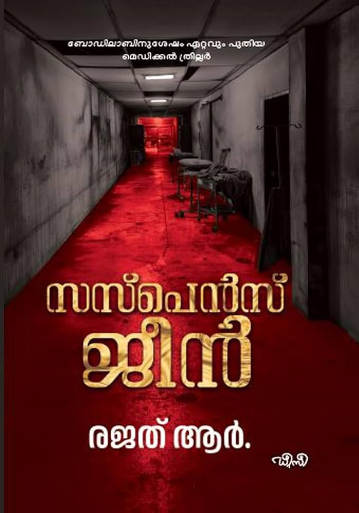

Author: രജത് ആർ
Review by: പ്രിയ രാധാകൃഷ്ണൻ
"ഓരോ മരണവും ഏതെങ്കിലും രീതിയിൽ ചുറ്റുമുള്ള ജീവിതങ്ങളെ മാറ്റിമറിക്കുന്നു"
രജത് ആർ. "ബോഡിലാബ് "നു ശേഷം എഴുതിയ മെഡിക്കൽ ത്രില്ലറായ "സസ്പെൻസ് ജീനി" ലെ കഥാപാത്രമായ ഡോക്ടർ അലക്സ് മരണത്തെ കുറിച്ച് പറഞ്ഞ വാക്കുകളാണിത്...
പവിത്രമഡ്ഡ് മെഡിക്കൽ കോളേജ് സീനിയർ സർജൻ ആയ അദ്ദേഹം പറഞ്ഞത് ജൂനിയറായ ഹരീഷ് അത്ര കാര്യമായെടുത്തില്ല. പിന്നീടൊരിക്കൽ ആശുപത്രിയിലെ ഇരുട്ടുമുറിയിൽ അപ്രതീക്ഷിതമായി കണ്ട പച്ചനിറത്തിൽ തിളങ്ങുന്ന മനുഷ്യശവശരീരം അയാളെ ഭയപ്പെടുത്തി. താൻ കണ്ടത് ഹാലൂസിനേഷനാണോ സത്യമാണോ എന്ന ചിന്തയ്ക്കിടയിൽ ചുറ്റും നടക്കുന്ന മരണങ്ങൾ ഹരീഷിനെ ആശയക്കുഴപ്പത്തിലാക്കി. ക്യാൻസറിനെതിരെ നാനോമരുന്ന് കണ്ടെത്താനുള്ള തന്റെ ലക്ഷ്യത്തിൽ മാത്രം ശ്രദ്ധ കേന്ദ്രീകരിച്ചു കൊണ്ടു ജോലി തുടരാൻ അയാൾ തീരുമാനിച്ചു. എങ്കിലും ഒരു പ്രത്യേക സാഹചര്യത്തിൽ ലക്ഷ്യപ്രാപ്തിക്കായി അയാൾക്ക് ചില രഹസ്യങ്ങൾ അറിയാതെ പറ്റില്ല എന്ന സ്ഥിതിവന്നു. ഡോക്ടർ അലക്സ് ചെകുത്താനോ അതോ താൻ കരുതും പോലെ ദൈവമോ..? ഉത്തരം എന്തുതന്നെയായാലും ആ മരണങ്ങൾ അയാളെ മാറ്റിമറിക്കുകതന്നെ ചെയ്തു!! പവിത്രമഡ്ഡ് മെഡിക്കൽ കോളേജ് ചരിത്രത്തെയും.
"അന്നിനി തുറക്കേണ്ടതില്ലെന്ന് കരുതിയ അയാളുടെ കണ്ണുകൾ നേരിയ തിളക്കത്തോടെ ഹരീഷിനെ നോക്കി" എന്നും മറ്റുമുള്ള പ്രയോഗങ്ങൾ നമുക്ക് ഇതിൽ കാണാം. കോവിഡ് എന്ന മഹാമാരിക്കാലത്തിലൂടെയും നോവൽ കടന്നുപോകുന്നു. "ജലമില്ലാത്ത നദിപോലെയായിരുന്നു ജനമില്ലാത്ത മഹാനഗരം " എന്ന് ആക്കാലത്തെ മുംബൈയെ കുറിച്ച് എഴുതിയത് വായിക്കുമ്പോൾ ജനാധിക്യത്താൽ മലിനീകരണപ്പെട്ട ആ മഹാനഗരത്തിന്റെ ചിത്രവും അത് കണ്ടിട്ടില്ലാത്തവരുടെ മനസ്സിൽ പോലും നിറയും. കോവിഡ് കാലഘട്ടത്തിലൂടെ കടന്നുപോയ ഓരോ മനുഷ്യനും ഏതെങ്കിലും രീതിയിൽ കഷ്ടനഷ്ടങ്ങൾ അനുഭവിച്ചിട്ടുണ്ട്. നാം മറക്കാനാഗ്രഹിക്കുന്ന ആ ദിനങ്ങളെ വീണ്ടും ഓർമിപ്പിക്കും ഈ നോവൽ.
സസ്പെൻസ് ജീൻ എന്നത് ഡോക്ടർമാരുടെ ഒരു ഗവേഷണവിഷയം മാത്രമല്ല കൊലയാളിയിലേയ്ക്കുള്ള ഒരു സൂചനയുമായിരുന്നുവെന്ന് നോവൽ തീരുമ്പോഴാണ് നമുക്ക് ചിന്തിക്കാനാവുന്നത്...
ഒറ്റയിരിപ്പിൽ വായിച്ചു തീർക്കാവുന്ന ത്രില്ലിങ് നോവൽ!!!
രജത് ആർ അവസാനതാളിൽ തന്റെ രചനയ്ക്ക് സഹായമായവരോട് നന്ദി പറയുന്ന കൂട്ടത്തിൽ 'അക്ഷരത്തെറ്റുകൾ തിരുത്തിത്തന്ന അമ്മ' എന്ന് എഴുതിയത് ഒട്ടൊരു പുളകത്തോടെയാണ് ഞാൻ പോലും വായിച്ചത്... ❤️